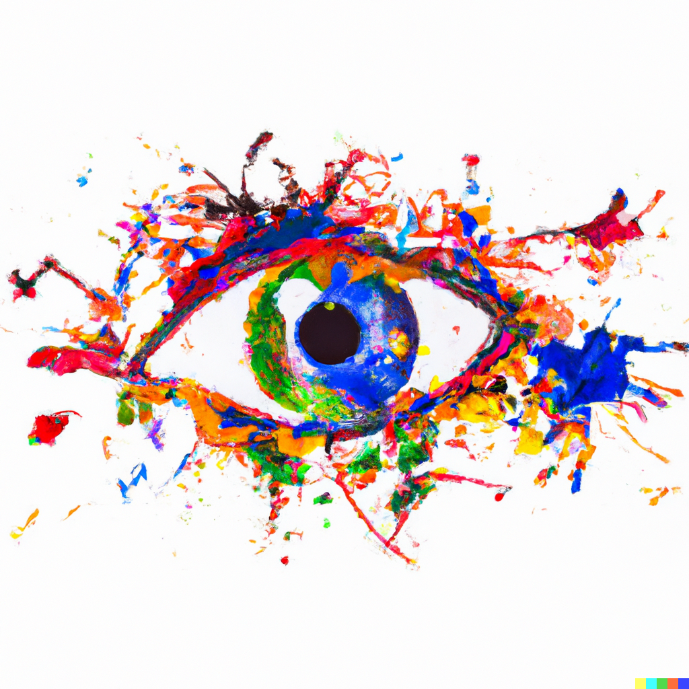

Will Harrison
Research Interests
-
Active visual perception: In my research on active visual perception, I strive to understand how we actively explore and perceive our environment using vision. I investigate the mechanisms that drive our attention and eye movements and how these factors influence our visual perception.
-
Visual working memory: My work in visual working memory explores the cognitive processes that allow us to temporarily store and manipulate visual information. I aim to understand the capacity, limitations, and neural basis of visual working memory.
-
Natural image statistics: My research on natural image statistics examines the statistical properties of natural images and how they shape our visual processing. I seek to reveal how the brain has adapted to efficiently process the visual environment in which we live.
-
Neural encoding: My work in neural encoding investigates how the brain represents and processes visual information at the neural level. I aim to understand the coding principles and neural mechanisms that underlie our ability to perceive and interpret visual stimuli.
Publications